| set | hair | defect class | BC_klein | PHEAD | QX | SSIM vs person |
|---|---|---|---|---|---|---|
| p015 + p007 | 4.5% | over-attention · render artefact | fail | perfect | perfect | 0.576 |
| navy peacoat model + p012 | 14.0% | over-attention · garment geometry | fail | fail | perfect | 0.879 |
| floral kimono model + p023 | 16.9% | failed attention · returns the input | fail | fail | perfect | 0.982 |
| p019 + p023 | 16.9% | failed attention · near-unchanged | fail | fail | ok | 0.879 |
Three bands, named by what reached the output
Working vocabulary, extending V2's “attention deficit”. The bands are defined by what arrived in the output relative to the garment, which is observable, rather than by attention, which we have never looked at.
One measurement was tried here and did not survive, which is worth stating
rather than quietly dropping. The intuition was that a subtractive crop is mostly bare skin
where a regenerated reference is mostly garment, so a chroma skin test over the references
should separate them. It does not. On p023 every reference scores 0.91–0.99
including QX's, because that garment is nude-coloured and a coarse YCrCb box cannot tell a
beige tank from the arm wearing it. On p007 QX scores a clean 0% — but so would
anything, since its non-white pixels are near-achromatic cream. Only p012, a dark
navy, gives a number that means what it looks like. The metric is in the manifest and carries
no signal; the argument on this page rests on the frames. That p023 defeats it
is itself the case restating itself — the garment is the same value as the skin it is worn on,
so after the head cut the crop is a low-contrast field with no silhouette in it.
over-attention · render artefactp015 + p007 · hair 4.5% · BC_klein fail
Hair damage is 4.5% — low enough that the bald pass buys nothing, and PHEAD, which is the same crop without that call, is perfect on this set. The extra klein pass re-rendered the reference and softened its edges, and the softened edge is what was copied. BC_klein's cheapest failure is caused by a generation it did not need to make.
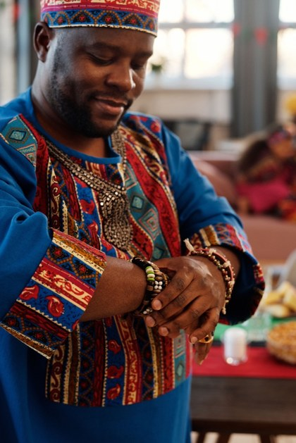
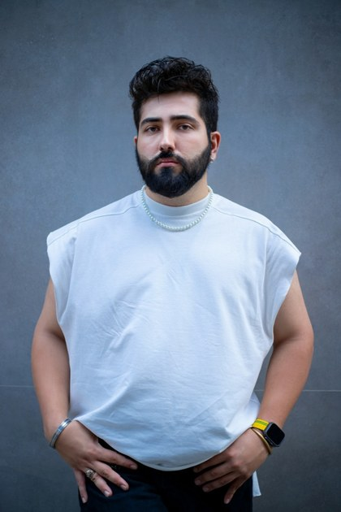
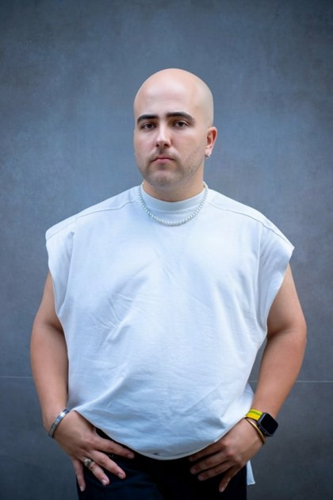
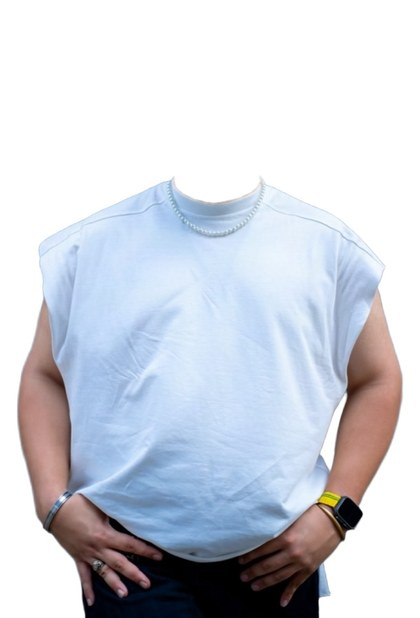
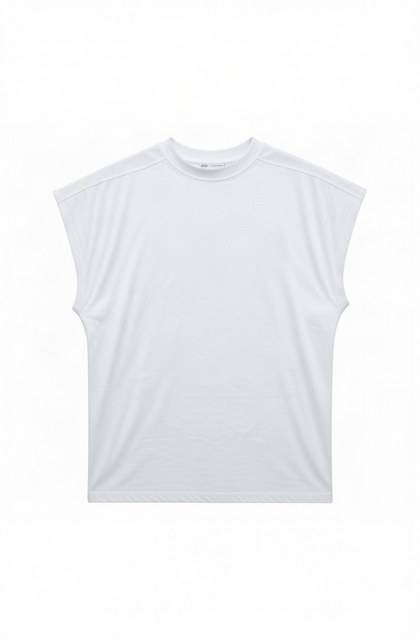
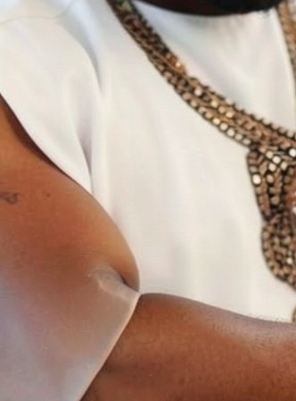
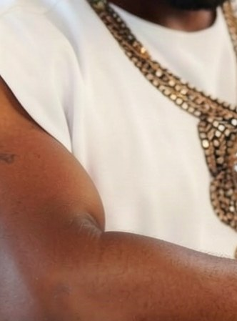
v3/artefacts/cases/p015+p007/over-attention · garment geometrynavy peacoat model + p012 · hair 14.0% · BC_klein fail
The transfer happens; the garment is wrong. This is the over-cut V2 already logged — “head removal takes the collar on several worn references” — appearing in a shipped arm rather than in a discarded crop iteration. The boundary of the mask became a design feature of the clothing.
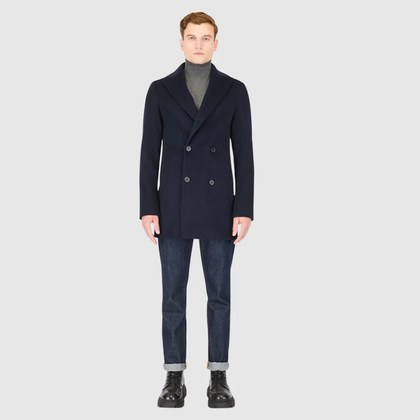
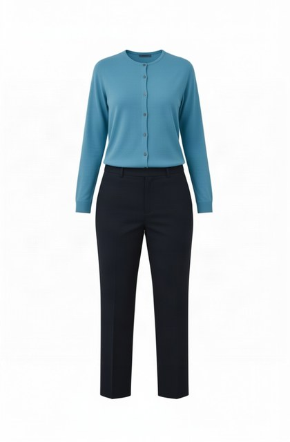
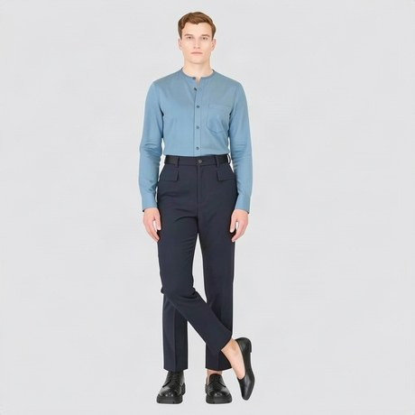
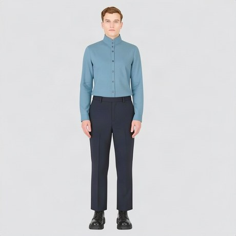
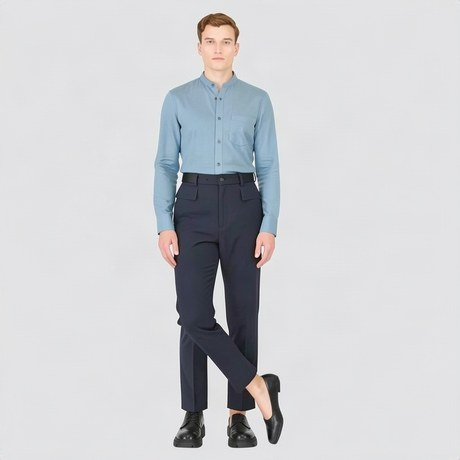
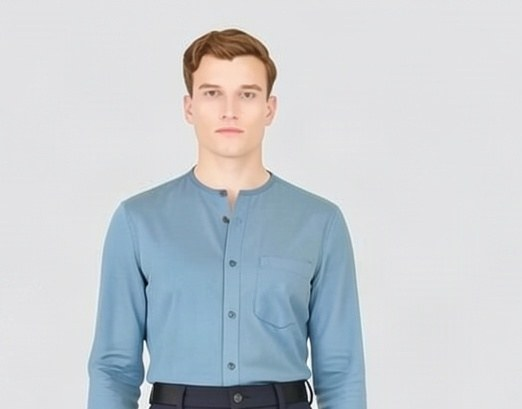
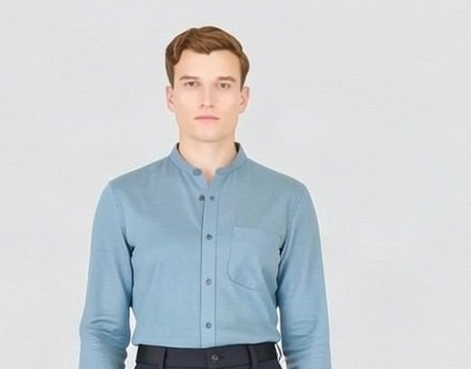
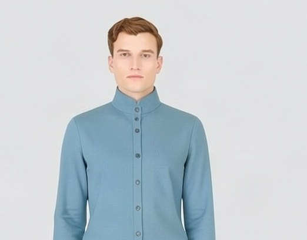
v3/artefacts/cases/dualuse_navy_peacoat_onmodel+p012/failed attention · returns the inputfloral kimono model + p023 · hair 16.9% · BC_klein fail
SSIM against the person input is 0.982: klein returned the photograph it was given. After the head cut the reference is a seated figure in profile, mostly bare arm and thigh, garment a minority of a low-contrast frame — and the garment is nude-coloured, the same value as the skin it is worn on. There is no garment silhouette in it to find.
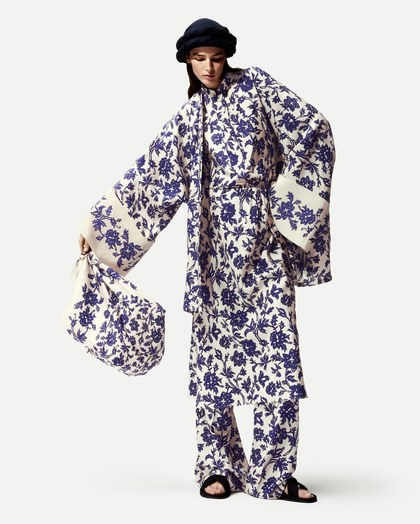
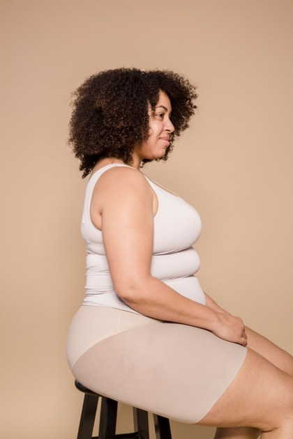
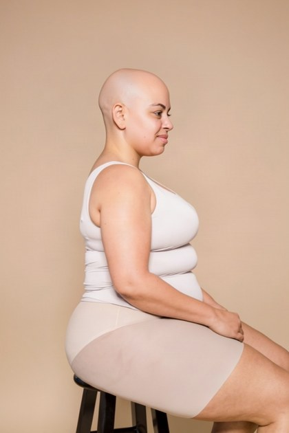
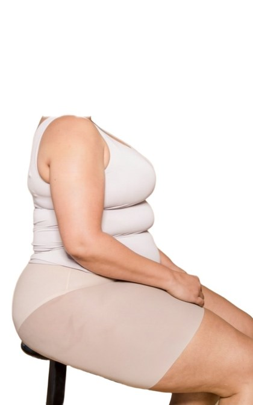

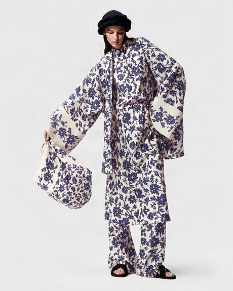
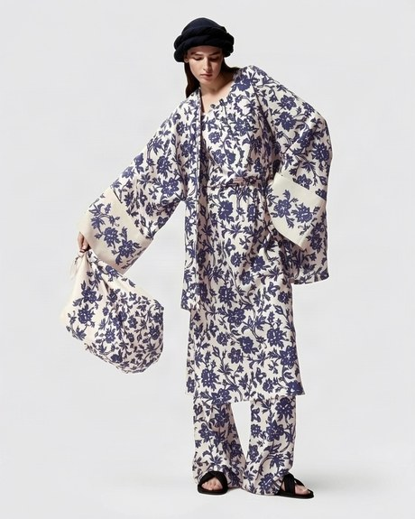
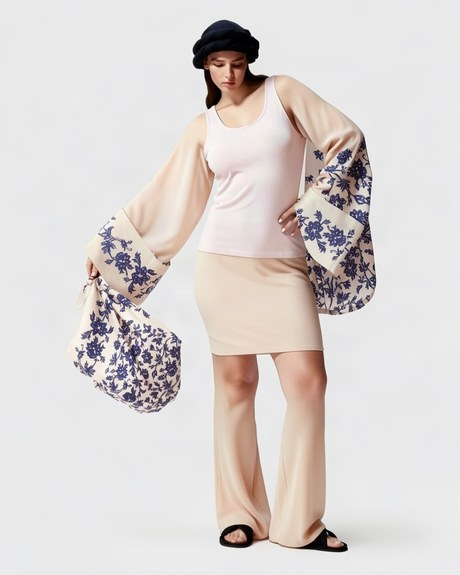
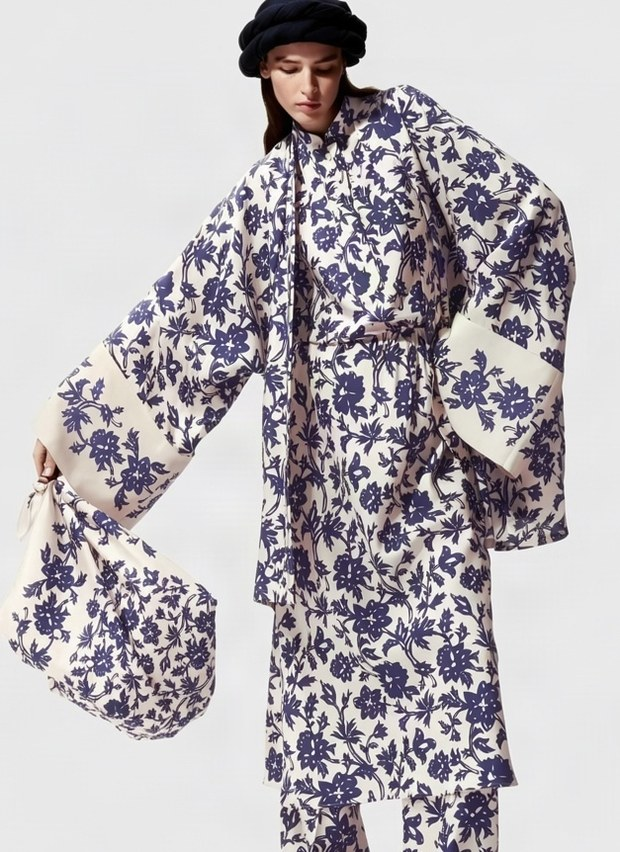
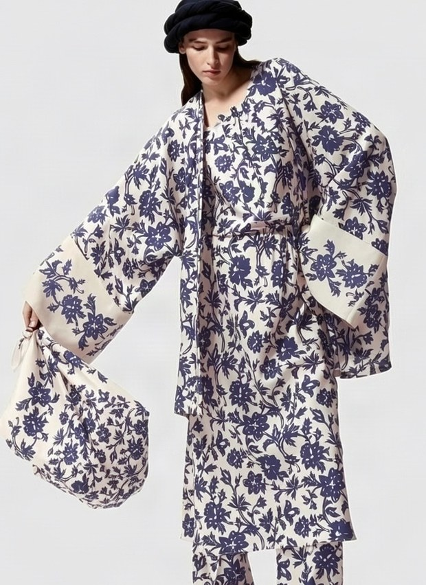
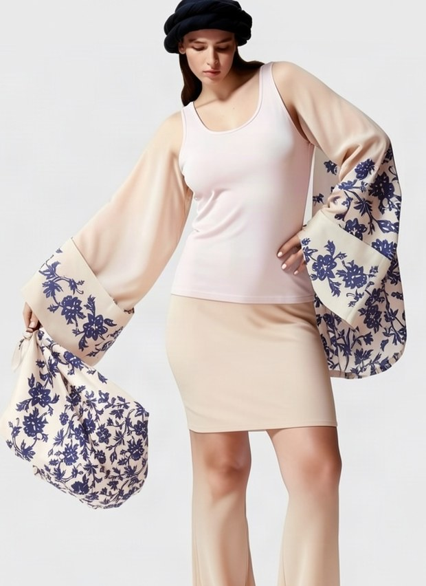
v3/artefacts/cases/HD_p023/failed attention · near-unchangedp019 + p023 · hair 16.9% · BC_klein fail
The same reference, a different person, the same outcome: the cream fleece jacket stays. Failure is a property of the garment, not the pairing — which is what makes it worth fixing at the reference rather than at the output.


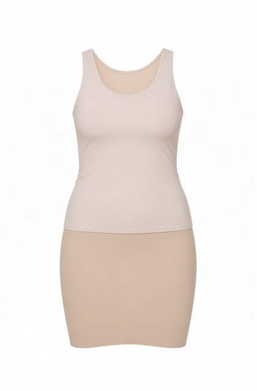
v3/artefacts/cases/HD_p023+p019/the other sideQX's own failures · 20 perfect / 17 ok / 1 fail
Everything above is an argument for QX. This section is the argument against it, because V3 proposes to fold QX's mechanism into the single path, and it would inherit this too. QX has the highest floor of any arm and the lowest ceiling, and the two facts have the same cause: it does not subtract the context, it replaces the garment. What comes back is a garment that is cleaner than the crop and is not necessarily the same garment.
invented detailp017 + p002 · hair 1.9% · QX fail, both subtractive arms perfect
QX's only outright failure in 38 sets, and it is on a set neither subtractive arm has any trouble with. The garment is a plain black tee. QX's reference invents a whole ghost figure — tee, jeans and sneakers — and the output arrives covered in white speckle and scratch marks that exist nowhere in the input. This is the arm the V2 harness escalated to in order to route around AI artefacts, and it produced the only true speckle artefact in the evaluation.
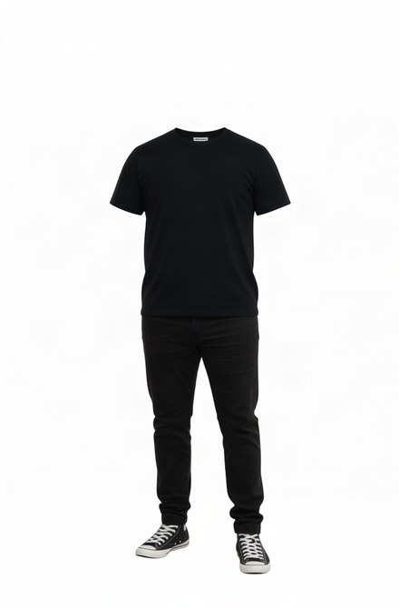
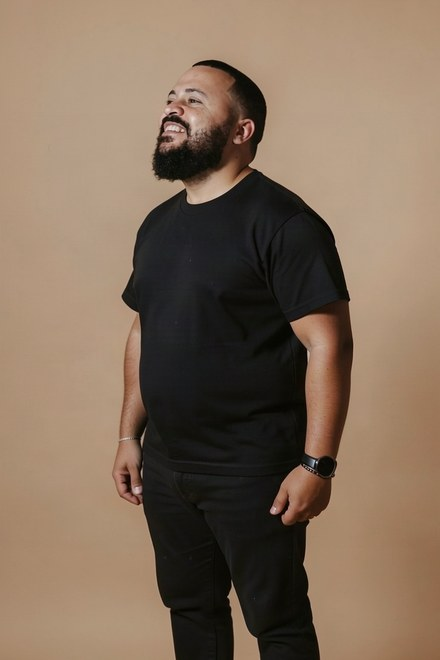
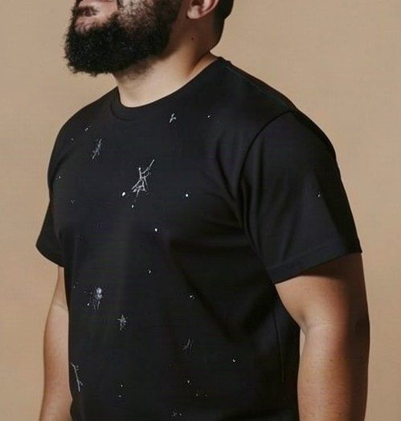
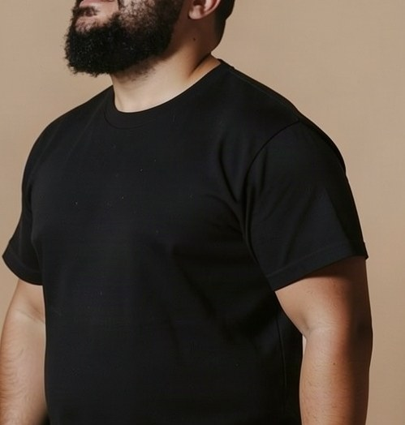
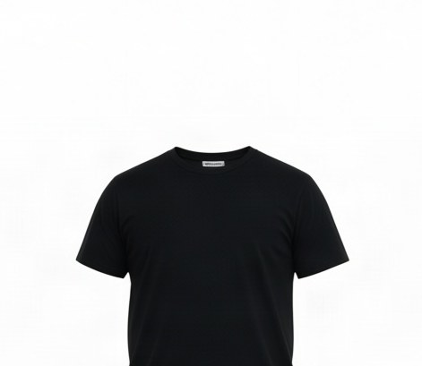
the ceilingExtraction drift
· 11 references, recomputed live from v2/runs/acab/
Median lightness, chroma and circular hue shift of the garment pixels
against the control crop, plus an edge-density ratio that catches a pattern being smoothed
away or invented. Deliberately dumb statistics, because V2 established that no embedding
metric can be trusted here — garment_sim scored 0.78 on an output that
transferred no garment at all. Red is past the flag threshold. This is a rank, not a
verdict: a changed collar or a moved seam does not show up in any of these columns.
The third and fourth column groups are V3's shape 1, already run. klein was measured as an extractor during V2's AC-A phase and the numbers were never used. They do not say what you would expect.
| QX_qwen_p1 (shipped) | klein distilled | klein base | ||||||||||
|---|---|---|---|---|---|---|---|---|---|---|---|---|
| reference | dL | dC | dHue | pattern | dL | dC | dHue | pattern | dL | dC | dHue | pattern |
| dualuse_scarlett_johansson_black_dress | -11 | -6 | 53° | ×0.44 | +10 | -1 | 7° | ×0.34 | +8 | -3 | 13° | ×0.33 |
| dualuse_woman_top_denim_skirt_nonceleb | -11 | -1 | 63° | ×0.64 | +53 | +2 | 45° | ×1.10 | +58 | +14 | 54° | ×2.37 |
| dualuse_zendaya_white_blazer_skirt | +19 | +0 | 54° | ×0.33 | +24 | -2 | 30° | ×0.24 | +11 | +2 | 41° | ×0.54 |
| p009 | -13 | -4 | 88° | ×0.52 | +10 | -1 | 56° | ×0.71 | +10 | -2 | 39° | ×0.84 |
| p012 | -9 | +0 | 16° | ×0.45 | +46 | +3 | 28° | ×0.47 | +54 | +13 | 15° | ×0.45 |
| p016 | +15 | +10 | 9° | ×0.38 | +12 | +3 | 80° | ×1.74 | +26 | +7 | 8° | ×0.56 |
| p019 | +11 | -0 | 5° | ×1.08 | +22 | -2 | 3° | ×0.92 | -1 | +0 | 4° | ×1.30 |
| p021 | +9 | +33 | 18° | ×0.53 | +50 | +37 | 16° | ×1.98 | +24 | +42 | 14° | ×2.70 |
| p023 | +7 | -5 | 9° | ×0.40 | +29 | -8 | 0° | ×0.38 | +20 | -5 | 7° | ×0.68 |
| p028 | -7 | -0 | 0° | ×0.62 | +9 | -1 | 8° | ×0.62 | +9 | +2 | 9° | ×1.05 |
| p030 | +17 | -4 | 1° | ×0.23 | +35 | -6 | 21° | ×0.25 | +19 | -4 | 30° | ×0.31 |
| mean |drift| | 12 | 6 | 29° | ×0.51 | 27 | 6 | 27° | ×0.80 | 22 | 8 | 21° | ×1.01 |
p030 comes back at ×0.23 of its pattern from Qwen — the texture
is gone. p021 comes back from klein base at ×2.70 with chroma
+42 — texture and saturation that were never there. A floor-raiser that invents is
not obviously safer than a crop that subtracts; it fails somewhere else.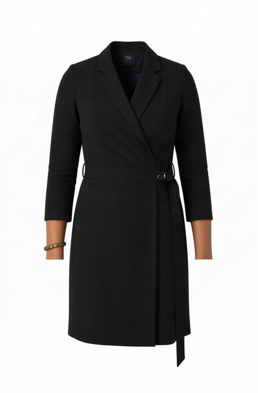
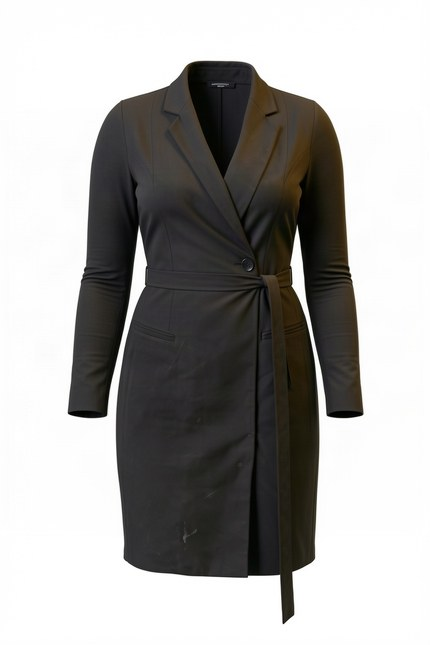
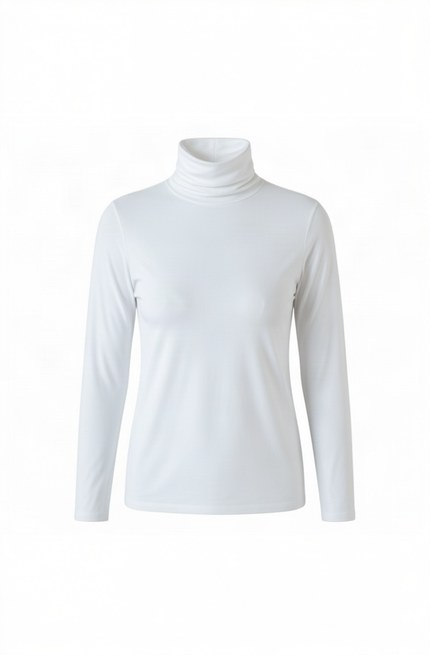
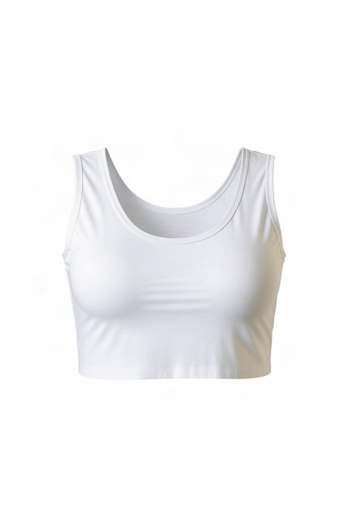
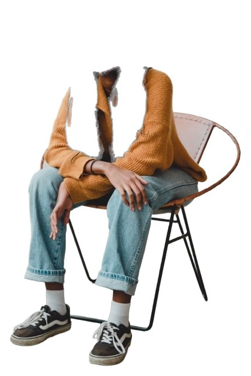
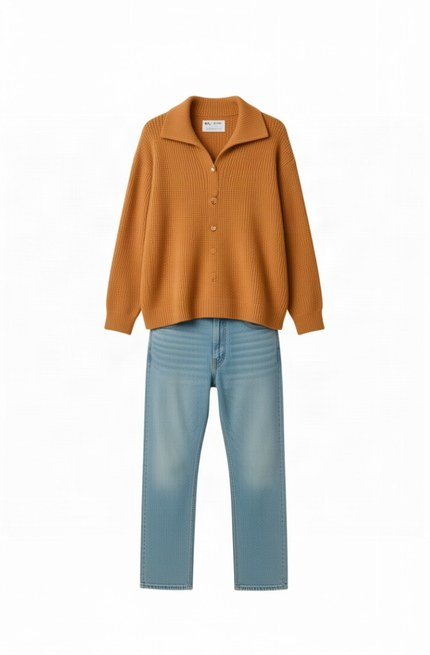
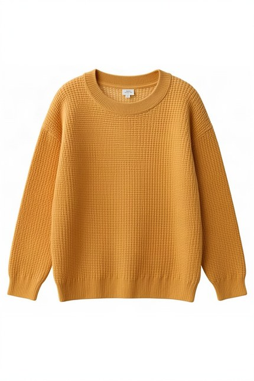
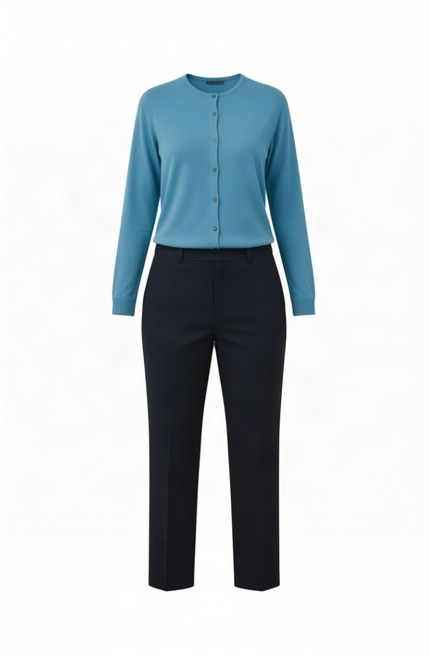
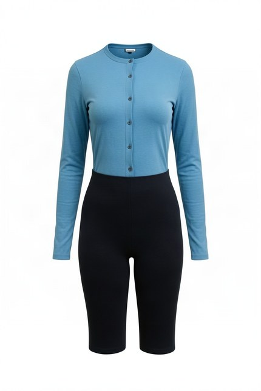
What QX costs, and why this is not simply “use QX”
Shown in full above: QX's one outright failure and the drift table.
QX takes all four: perfect, perfect, perfect, ok. It is also
20 perfect / 17 ok / 1 fail over the same 38 sets — the lowest ceiling of any arm.
Regeneration invents detail: hue drifts 21–30° on every reference (worst
p009 at 88°), pattern retention falls to ×0.23 on
p030, and only p019 and p028 come back clean.
“No extraction arm currently returns the same garment.” The reviewer preferred the
Qwen crops by eye while they were losing half the pattern — cleanest-looking and most
faithful pull apart. V3's shape 1, klein as the extractor, inherits that trade, and
klein's own extraction quality has never been measured; the numbers above are Qwen's.
Nothing caught any of these
From v223_vlm_eval.csv, the gate's verdicts on these exact four
BC_klein outputs:
| set | artefact | usable | tryon | transfer | garment | human |
|---|---|---|---|---|---|---|
| p015+p007 | CLEAN | OK | PERFECT | OK | OK | fail |
| navy_peacoat+p012 | CLEAN | OK | PERFECT | FAIL | FAIL | fail |
| HD_p023 | CLEAN | OK | PERFECT | OK | FAIL | fail |
| HD_p023+p019 | CLEAN | OK | PERFECT | OK | FAIL | fail |
The artefact prompt returned CLEAN on all 114 outputs in the
eval, and tryon calls every one of these four perfect. Only
garment — the single prompt that is shown the reference — fires, on three of four.
The case it misses is p015+p007: the one true render artefact is the one every
instrument is blindest to. V3 ships no gate, so it would ship silently. One CPU SSIM against
the person input needs no model and catches HD_p023 at 0.982.